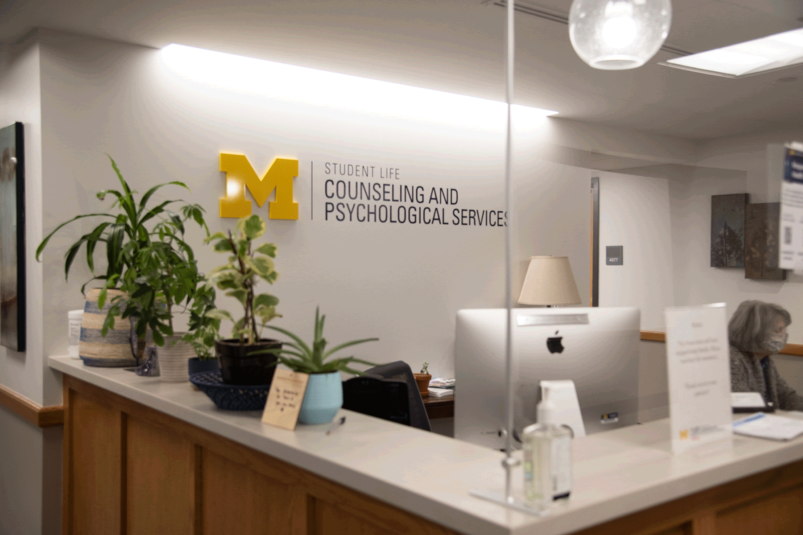
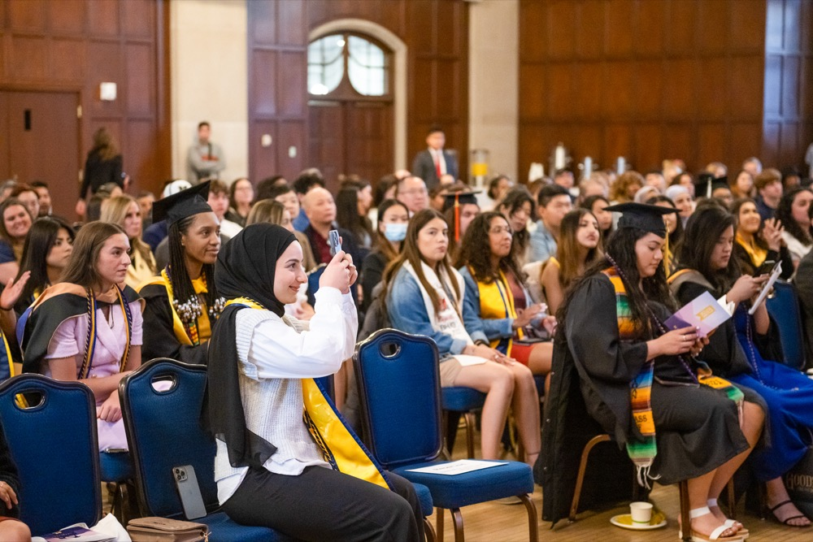

Counseling and Psychological Services (CAPS) at the University of Michigan is dedicated to supporting the mental health and well-being of the university's diverse student body. CAPS provides a safe, inclusive, and accessible environment for students to address their mental health needs through a variety of clinical, preventative, and supportive services.
Available Services
Counseling Services: Individual and group therapy sessions offered in-person and virtually. Teletherapy services through Uwill, providing video, phone, chat, and messaging options at no cost.
Peer Support: Individual Peer Counseling (IPC) for students seeking informal mental health support and a place to share their concerns.
Anonymous Peer Support: Togetherall: An online, anonymous, clinically moderated peer-to-peer mental health community for students.
Workshops and Programming: Mental health workshops tailored to student needs, including first-year student guides, coping strategies, and stress management.
Crisis and Emergency Support: Immediate assistance for students experiencing urgent mental health concerns through CAPS' 24/7 hotline and partnerships with emergency services.
Specialized Resources: Support for students impacted by campus climate issues, discrimination, or socio-political events.
Diversity and Inclusion Initiatives: Services grounded in multicultural, multi-disciplinary, and multi-theoretical practices.
Self-Care Resources: Guides and strategies for self-care during times of stress.
Private Telecounseling Spaces: Limited spaces available for private remote counseling.
Front Desk Support: Assistance at the Michigan Union 4th Floor front desk.
The University of Michigan supports its approximately 4,000 first-generation college students with programs, events, and resources to help them thrive on campus. First-generation students are defined as undergraduates or graduate students whose parents or guardians have not completed a four-year college degree.
First-Generation Gateway
Serves as the central hub for first-gen student support
Email: firstgeninfo@umich.edu
Located on the third floor of the Student Activities Building in the Office of Academic Multicultural Initiatives
Summer hours: Monday – Friday, 9:00 AM – 3:00 PM
Special Events
First-Generation Graduation Celebration
Annual event celebrating first-gen graduates
Next celebration: April 30, 2025 (6:30–8:30 PM)
Registration deadline for inclusion in the First-Gen Booklet: March 14, 2025
Recognition as a First Forward Institution
U-M is designated by NASPA as a First Forward Institution
Acknowledges commitment to enhancing the success of first-gen students
Wellness and Balance
Self-Care Resources
Stress Management Techniques
Mindfulness and Meditation Sessions
Exercise and Fitness Programs
Healthy Eating Guidelines
Building Support Networks
Peer Mentoring Programs
Student Support Groups
Faculty Office Hours Guide
Community Building Events
Mental Health Support at CAPS
Counseling Services Overview

CAPS Main Office - Michigan Union 4th Floor
At CAPS, we understand that undergraduate school can be both exciting and challenging. Our dedicated team of professionals offers a safe, inclusive, and accessible environment for students to address their mental health needs through a variety of clinical, preventative, and supportive services.
Available Support Options
Individual Counseling
Schedule one-on-one sessions with our experienced counselors who understand the unique pressures of undergraduate school. We offer:
Flexible scheduling options
Crisis support available 24/7
Multilingual counselors
Identity-affirming care
Teletherapy services through Uwill
Group Therapy Programs
Join our specialized groups designed for students:
Dissertation Support Group
International Student Connection
Mindfulness for Academic Success
undergraduates Student Process Group
Anonymous Peer Support
Access Togetherall: An online, anonymous, clinically moderated peer-to-peer mental health community for students.
Wellness Workshops
Our workshops provide practical tools and strategies for maintaining mental health while navigating academic challenges.
Upcoming Workshop Schedule - Winter 2025
Stress Management Essentials
Every Tuesday, 3-4 PM | Learn evidence-based techniques for managing academic stress and anxiety.
Sleep Hygiene and Academic Performance
Monthly, First Wednesday | Discover the crucial connection between quality sleep and academic success.
Mindfulness Meditation Sessions
Daily, 12-12:30 PM | Drop-in sessions for quick mental refreshment between classes.
Building Your Community
First-Generation Student Support

Celebrating Our First-Gen Community
Being the first in your family to pursue a undergraduate degree is a significant achievement. Our First-Gen undergraduate Student Network provides resources and community support to help you navigate this journey. We support approximately 4,000 first-generation college students with programs, events, and resources to help them thrive on campus.
First-Gen Gateway
Central hub for first-gen student support
Email: firstgeninfo@umich.edu
Location: Third floor of the Student Activities Building (OAMI)
Summer hours: Monday – Friday, 9:00 AM – 3:00 PM
Programs and Events
Peer Mentoring
Connect with experienced first-gen graduate students who understand your unique challenges and can share valuable insights.
Monthly Social Events
Join us for:
Coffee Hours: Every Wednesday, 10-11 AM
First-Gen Friday Lunches
Study Groups and Writing Sessions
Professional Development Workshops
First-Generation Graduation Celebration
Next celebration: April 30, 2025 (6:30–8:30 PM)
Registration deadline: March 14, 2025
Community Building Events
Regular Community Activities
Get involved in events designed to help you connect with fellow students and build lasting relationships within the UMSI community.
Weekly Game Nights
Thursday evenings in the UMSI Commons. Board games, video games, and snacks provided!
Monthly Cultural Celebrations
Share and experience diverse traditions, foods, and customs from our international community.
Outdoor Adventures
Exploring Michigan's Beautiful Outdoors Together
Join organized group activities: